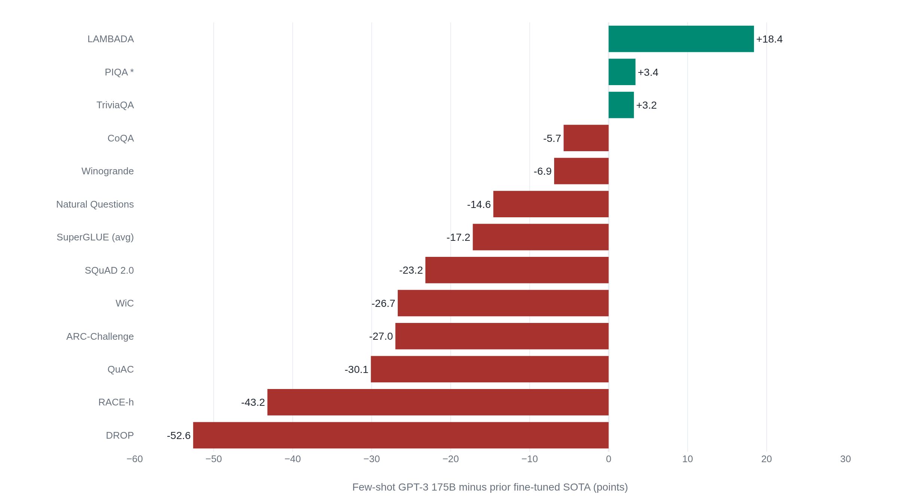

Few-shot GPT-3 beat fine-tuning on a handful of tasks and trailed it on most
The same tables that show genuine few-shot arithmetic also leave most benchmarks behind fine-tuning and cannot separate a capability the prompt taught from one the pretraining already held.
Prior Context
Almost every claim that a model can be told what to do rather than trained to do it traces back to a single 2020 result, and the word attached to that result, learning, decides how much the claim is worth. A score is only ever evidence of a capability if the capability was acquired where it was measured, so a benchmark number carries two questions the headline hides: whether the training data leaked into the test, and whether the skill was built from the examples in the prompt or was already sitting in the pretrained weights waiting to be addressed. The first question turns a contamination appendix from fine print into the center of the argument. The second decides whether a rising accuracy curve records a model that learns or a training corpus that is very large, and telling those two apart is what lets a reader judge the next capability said to emerge from scale.
- Prior Chinchilla beat a model four times its size on the same compute: the compute-optimal token budget that shows GPT-3's run was badly under-trained by a standard set two years later.
- Prior Rebuild ImageNet's test set and the top model loses eleven points: how much of a measured score belongs to the exact data it was scored on, which is the whole stake of a train-test overlap analysis.
The result the tables carry
GPT-3 is a 175-billion-parameter language model, and its claim is that scale alone bought the ability to learn a task from a few examples in the prompt, with no gradient updates. The paper calls this in-context learning, and its central figure earns the word: few-shot accuracy climbs steeply and smoothly with model size, faster than zero-shot accuracy, so the largest model gains the most from its examples.1 On LAMBADA, a next-word prediction task, few-shot GPT-3 reaches 86.4% against a prior fine-tuned record of 68.0%. On TriviaQA it answers 71.2% of open-domain questions, past the 68.0% of a fine-tuned retrieval system built for the job.1 These are not rounding-error wins, and no later work has taken them back. The scaling under them is real too: the benefit of the few-shot examples grows with model size, the largest model gaining about ten points from them on LAMBADA while the same examples push the smallest model's accuracy below its zero-shot.1 Even the paper's contemporary critics granted the curve.
The open question is not whether the numbers are real. It is what kind of capability a high few-shot score records. The paper's own framing leaves the answer ambiguous on purpose: pretraining, it says, lets the model "rapidly adapt to or recognize the desired task."1 Adapt and recognize are two different claims wearing one name.
The arithmetic is real computation
The strongest evidence that few-shot GPT-3 does more than retrieve a pattern sits in its arithmetic. Given a few worked examples, the 175B model adds two-digit numbers with 100% accuracy.1 The obvious worry is memorization. The authors checked. Out of 2,000 addition problems they found 17 present in the training set, 0.8%, and the model's mistakes were the mistakes of a procedure rather than a lookup. It drops a carried one.1 A memorized table does not fail by forgetting to carry. nostalgebraist, an independent researcher who read the paper as a disappointment, granted the point: the prompt tells the model it is doing real arithmetic, and the arithmetic is real.2 The ability also appears only at the largest sizes, absent in the small models, the shape a capability unlocked by scale would take. On this task the model computes.
The score moves with the format
A capability you can read off a table should be stable. GPT-3's few-shot scores are not. On LAMBADA, going from zero examples to one example makes the model worse, 76.2% down to 72.5%, before the full few-shot prompt recovers to 86.4%. The authors attribute the dip to the one-shot format, which a model needs several examples to recognize.1 On Romanian-to-English translation the sign flips: one example nearly doubles the zero-shot BLEU score.
| Task (metric) | Zero-shot | One-shot | Few-shot |
|---|---|---|---|
| LAMBADA (accuracy) | 76.2 | 72.5 | 86.4 |
| Ro→En translation (BLEU) | 19.9 | 38.6 | 39.5 |
| TriviaQA (accuracy) | 64.3 | 68.0 | 71.2 |
| 2-digit addition (accuracy) | 76.9 | 99.6 | 100.0 |
Same model, same weights, two tasks, opposite responses to the same change. And the paper understates the swing: reordering the same few examples, nothing else changed, moves GPT-family accuracy across eleven classification tasks between near state-of-the-art and random guessing, one study found.3 A stable capability does not behave this way; a process that recognizes a format does. The arithmetic makes the point again at its ceiling. The two-digit addition that scores 100% falls to 25.5% at four digits and 9.3% at five.1 Whatever the model acquired in-context, it was not addition: it computes reliably only where the numbers themselves are common, and fails exactly where a procedure that generalized would not.
Finding a skill is not acquiring one
Set every win beside every loss and the picture the word "learner" paints comes apart. On the SuperGLUE suite few-shot GPT-3 averages 71.8 against a fine-tuned 89.0, and on reading comprehension the gaps are craters: DROP scores 36.5 F1 against 89.1, SQuAD 2.0 scores 69.8 against 93.0.1 Translation out of English trails supervised systems, English-to-Romanian by more than fifteen BLEU (21.0 vs 38.5), even as translation into English matches one (German-to-English, 40.6 vs 40.2), which the paper reads as the strength of an English language model, not a translator.1

The wins are few, two of the three small; the losses are many and several enormous. What that shape means depends on where the model fails. If few-shot performance were genuine acquisition, its failures should scatter by difficulty. Instead they cluster by task type. GPT-3's systematic weak spot is the family of tasks that ask it to compare two sentences: WiC, which asks whether a word means the same thing in two contexts, sits at 49.4%, exactly random chance, and the authors report trying many phrasings without moving it. They group WiC with RTE, CB, and ANLI as comparison tasks and name the pattern.1 This is what a location account predicts and a learning account does not. No stretch of ordinary pretraining text is labeled "here are two sentences, decide whether the word means the same thing," so there is no capability there to recognize, and a handful of prompt examples do not build one.
A later experiment sharpens the point. Min and coauthors replaced the correct labels in the demonstrations with random ones and barely dented few-shot accuracy, consistently across twelve models including GPT-3.4 Had the examples been teaching which input goes with which label, scrambling it would have wrecked the score. What they supplied instead was the task's shape: its label set, its format, its kind of input. The result is bounded to classification and multiple choice, so it is no proof that examples are useless, but the direction is plain. The few-shot curve may be less a fact about learning than a fact about what a very large training corpus contains.
The contamination is real, and not the answer
A skeptic reaching for the easy dismissal says the wins are leakage: the test items were in the training set. The paper's fourth section is candid enough to invite the charge and careful enough to defeat it. A filtering bug left some train-test overlap in place, and the model was too expensive to retrain.1 So the authors built a clean version of each benchmark, dropping every test item with a 13-gram overlap against the training text, and rescored. On most benchmarks the score barely moved, and they found no correlation between a benchmark's contamination and how far its score fell. LAMBADA had substantial genuine overlap, yet its clean subset scored within 0.5% of the full set.1
The honest contamination story is narrow. Of every result in the paper, exactly two carry the authors' asterisk for likely contamination, and the paper flags them itself: PIQA at 82.8, which clears its fine-tuned baseline of 79.4, and Winograd at 88.6, which sits just below its record of 90.1.1 The wins that survive, LAMBADA and TriviaQA and the arithmetic, are not explained away by leakage. The real caveat is subtler: they cannot be sure the clean subset is drawn from the same distribution as the original, so a bias making the clean items easier could hide memorization rather than rule it out.1
What the document is worth as evidence now
Judge the paper by what 2020 could know. The team said plainly that it built "much larger models on many fewer tokens than is typical," training 175 billion parameters on 300 billion tokens.1 Two years later Chinchilla named GPT-3 among the models it found "significantly undertrained," and put the compute-optimal budget near twenty tokens per parameter, far above what GPT-3 got.5 GPT-3 could not have known that, nor instruction tuning, RLHF, or the systematic contamination audits that came later. None is a mark against it.
What is fair to hold it to is the reading its results invited. The curves became founding evidence for "emergent abilities," capabilities said to switch on past a threshold of scale. Schaeffer and coauthors later argued that much of that emergence is an artifact of the metric: score a task with a harsh all-or-nothing measure and a smoothly improving model looks like it jumps.6 That cuts both ways, and it does not say the capability is absent. It says the discontinuity was in the ruler while the underlying skill improved all along, which is exactly the smooth few-shot curve GPT-3 actually reported. The fluency was over-read as well. Marcus and Davis, given no research access, tested the outputs and found the comprehension behind them "seriously off," fluent text not to be trusted.7
Sources
- arXiv · Brown et al., "Language Models are Few-Shot Learners" (GPT-3, 2020)
- nostalgebraist · "GPT-3: a disappointing paper" (2020)
- arXiv · Lu et al., "Fantastically Ordered Prompts and Where to Find Them" (2021)
- arXiv · Min et al., "Rethinking the Role of Demonstrations: What Makes In-Context Learning Work?" (2022)
- arXiv · Hoffmann et al., "Training Compute-Optimal Large Language Models" (Chinchilla, 2022)
- arXiv · Schaeffer, Miranda & Koyejo, "Are Emergent Abilities of Large Language Models a Mirage?" (2023)
- MIT Technology Review · Marcus & Davis, "GPT-3, Bloviator" (2020)